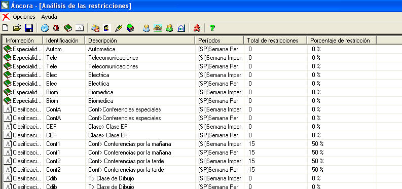
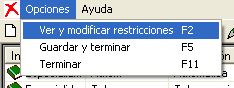

|
Análisis de las Restricciones |
Los análisis de las restricciones son de mucha utilidad cuando se desea saber que tan restringidas están las informaciones. Inclusive desde esta misma ventana se pueden cambiar dichas restricciones, a menos que sean asignaciones de actividades.

¿Cómo cambiar desde aquí las restricciones?

Variante 1. Seleccione la opción Ver y modificar restricciones del menú opciones o presione F2
Variante 2. Haga doble clic en la información deseada